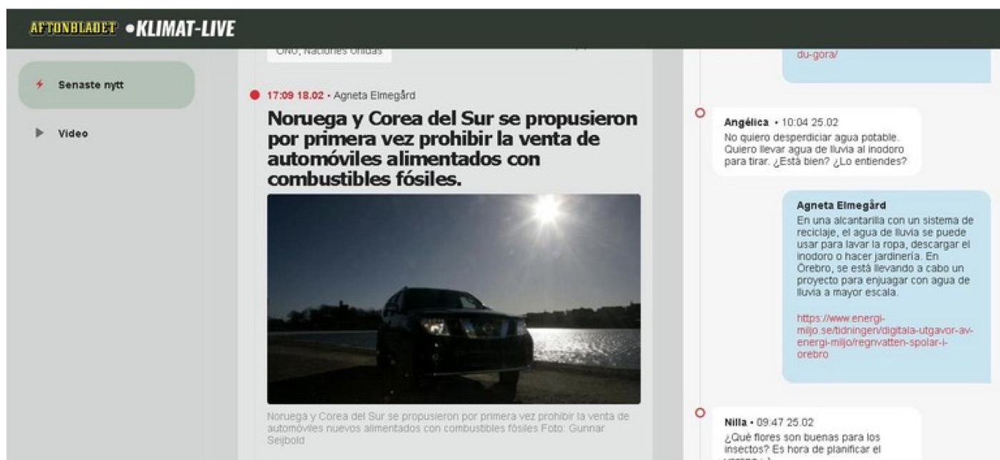

The climate emergency is undoubtedly the greatest challenge of the 21st century, and the media play a key role in the symbolic and discursive construction of the climate phenomenon. Sweden ranks among the top countries in meeting the Sustainable Development Goals and is the EU country where the largest share of people see the climate crisis as the most serious problem facing the world (43%, compared with an EU average of 18%). This study analyses media coverage and news frames on climate issues in Sweden through 178 news items from the “Klimat-Live” section of Aftonbladet, the country’s most-read digital newspaper, over three months in 2021. Variables included topic, terminology, and the presence, type and origin of hyperlinks and multimedia. Results show coverage focused on mitigation and transition initiatives (48%), consequences of the climate crisis (31%) and causes (16%), with broad terminology and medium-to-high hypertextual quality. Shortcomings include scarce references to animal agriculture and meat consumption. The study concludes that the newspaper’s coverage is consistent with the seriousness Swedish citizens attribute to climate change and in line with several recommendations for climate communication.
Book chapters · 2022
Comunicación para la transición ecológica. Análisis de la sección «klimat-live» en Aftonbladet
[Communication for the Ecological Transition: An Analysis of the “klimat-live” Section in Aftonbladet]
In: Comunicar e investigar en tiempos de emergencia climática (pp. 29–46). Dykinson
